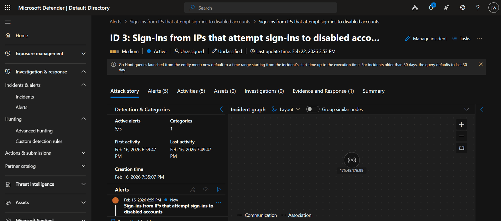
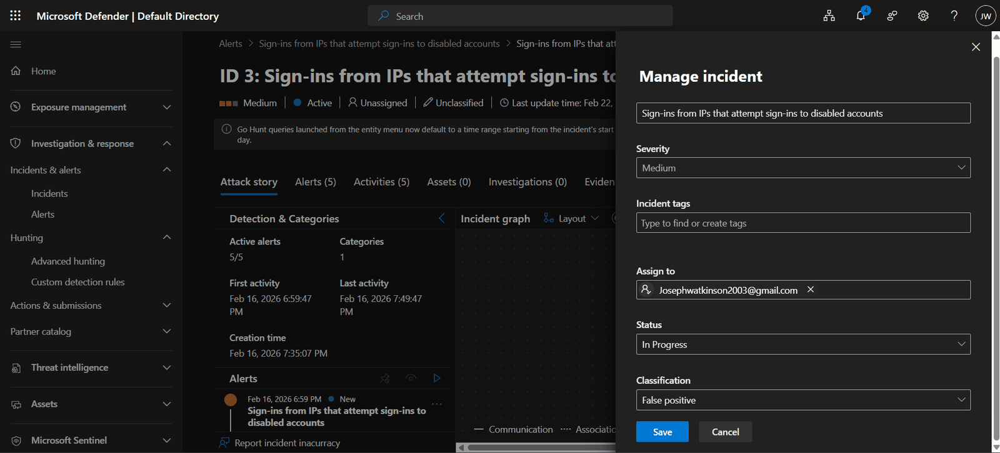
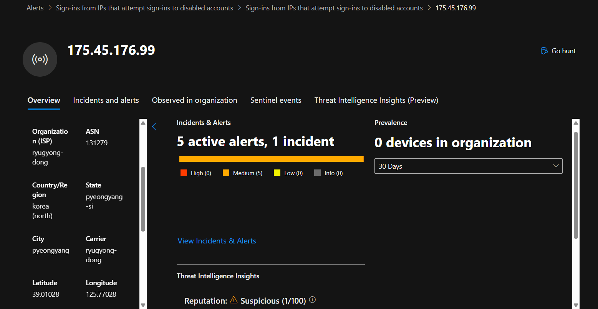

Microsoft Defender incident triage
- What I did
- Triaged a Medium severity Defender alert for sign-in attempts against disabled accounts, then investigated the IP address behind it.
- Tools
- Microsoft Defender XDR, Microsoft Sentinel
- Outcome
- The evidence pointed towards credential stuffing from a North Korean IP, but without the raw sign-in logs I couldn't confirm it, so I left the verdict open and set out how I'd escalate.
Objective
To investigate and triage a Microsoft Defender alert for repeated sign-in attempts from a suspicious external IP address against disabled accounts. The goal was to work out whether the activity was malicious (initial access through credential stuffing or password spraying) or a benign authentication misconfiguration.
Environment & Threat Model
- Platform: Microsoft Defender XDR / Microsoft Sentinel, using Microsoft's demo alerts.
- Detection: built-in analytics rule "Sign-ins from IPs that attempt sign-ins to disabled accounts", Medium severity.
- Error code observed:
50057(user account is disabled). - Threat model: credential stuffing or password spraying from a malicious source.
Investigation
Triage in the alert queue
I started in the Defender alert queue, where a Medium severity alert titled “Sign-ins from IPs that attempt sign-ins to disabled accounts” was waiting to be triaged. Defender mapped it to Initial Access and Persistence. This is the standard Tier 1 starting point: spotting new alerts, checking their severity and deciding what to pick up first.

Reviewing the incident
Opening the incident gave me the detection rule logic, a timeline of the activity, the severity and the entity relationships in the Attack Story. I went through the Attack Story and incident graph to see whether anything else was linked to it.

I then assigned the incident to myself and set it to In Progress, as a Tier 1 analyst would before digging in.

Investigating the source IP
As the whole alert centred on one IP address, that was the obvious thing to pivot to next. The IP details showed:
- Geolocation: North Korea
- ASN: 131279
- A suspicious reputation score
- Five active alerts and an incident already linked to the same IP

Results
I couldn't reach a firm verdict on this one. Everything I could see pointed towards a malicious credential stuffing attempt: a North Korean IP, a poor reputation score, five correlated alerts and repeated attempts against accounts that had already been disabled. The alert also flagged sign-ins to active accounts from the same IP.
The deciding question is whether any of those sign-ins to active accounts actually succeeded. The demo environment didn't give me the raw sign-in logs, so I couldn't check, and I've left the incident undetermined rather than guess.
Analysis
- Credential stuffing over password spraying: spraying usually tries one common password across lots of current accounts. Attempts against disabled accounts suggest someone working through an old leaked list of usernames and passwords, without knowing which accounts had since been closed.
- Risk: if any of the sign-ins to active accounts succeeded, the attacker has a working account and a foothold in the tenant.
- Next steps: if the sign-in logs confirmed a success, I'd escalate straight away, revoke the user's sessions, reset their password, check their MFA and conditional access, and block the IP. If nothing got in, I'd still block the IP and record it as an attempted attack.
- Limitations: this was a demo environment, so the raw sign-in data in the 'Observed in organization' tab wasn't available to confirm successful sign-ins or correlate sessions.
- Learning outcome: worked through the Tier 1 SOC workflow of alert triage, incident scoping, entity investigation and documenting findings.
Defensive Relevance
- MFA and conditional access would stop a leaked password on its own from getting anyone in, and risky sign-in policies can block attempts from high-risk locations like this one.
- Sign-in attempts against disabled accounts are a useful early warning of credential stuffing, so this rule is worth keeping enabled and tuned.
- Lockout and rate limiting policies make credential stuffing and password spraying much slower and noisier.
Ethical Context
Carried out using Microsoft's demo alerts. No real user accounts or production systems were involved.